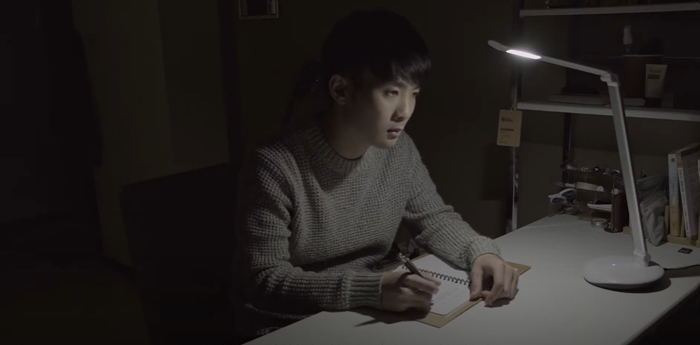

記憶裡的貓腳印
親情，是我們生活中不可或缺的一部分，影片主要敘述兒子陪伴失智的媽媽尋找過世多年的貓，藉此帶出親情的重要。
強調寫實的人物與場景，整體畫面對比度較低，篇暖色調。
企劃發想
（1） 長篇劇情短片，希望以溫暖
、動人來感動觀眾，選定某組員親身經歷之故事進而改編。
（２） 考量到非專業演員，決策用旁白搭配組員自彈自唱的背景音樂的方式敘述內心以及推進劇情，亦是更感性的方式。
（３） 希望以隱喻的方式說明很愛家人，不管要做任何事情都會互相陪伴，而母親忘了一切也不會忘記有關你的事 ，卻因生活無奈不得不將其送去養老院。
（２） 考量到非專業演員，決策用旁白搭配組員自彈自唱的背景音樂的方式敘述內心以及推進劇情，亦是更感性的方式。
（３） 希望以隱喻的方式說明很愛家人，不管要做任何事情都會互相陪伴，而母親忘了一切也不會忘記有關你的事 ，卻因生活無奈不得不將其送去養老院。
擔任工作
● 腳本企劃
● 影片剪輯
● 道具租借
● 影片剪輯
● 道具租借
遭遇困難
● 貓咪過於不可控
● 天氣因素之麻煩
● 演員情緒難駕馭
● 天氣因素之麻煩
● 演員情緒難駕馭
成就
● 小組間互評第一名
Photos
